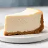

Shavuot Cheesecake

This is a tasty cheesecake to make during the Jewish holiday of Shavuot, when you eat a lot of dairy foods. Top with your favorite blueberry, strawberry, or other topping. Or enjoy it without a topping. It is a delicious cheesecake!
Ingredients
Crust
- 10 graham crackers
- ½ cup walnut pieces
- ¼ cup confectioners' sugar
- 1 ½ teaspoons ground cinnamon
- ¼ teaspoon ground nutmeg
- 1 pinch salt
- 2 tablespoons unsalted butter, melted
Filling
- 2 pounds cream cheese at room temperature
- 4 eggs at room temperature
- 1 ½ cups white sugar
- ¾ cup sour cream
- ½ cup half-and-half
- ¼ cup sweetened condensed milk
- ¼ cup all-purpose flour
- 2 teaspoons vanilla extract
- 1 quart boiling water, or as needed
Steps
- Preheat oven to 325 degrees F (165 degrees C). Place parchment paper over bottom of a 9-inch springform pan and seal pan around the base (the parchment paper should be sticking out the edges). Grease sides of pan, but not parchment paper.
- Pulse graham crackers, confectioners' sugar, walnuts, cinnamon, nutmeg, and salt in a food processor until mixture is crumbly, about 30 seconds. Pour melted butter over the crumbs and continue to process for 10 seconds. Push crumbs down the sides of the processor with a spatula and continue processing for about 10 more seconds until crumbs are evenly darkened. Press mixture firmly in an even layer across bottom of pan.
- Clean and dry food processor. Cut cream cheese into chunks and place in food processor. Add eggs, sugar, sour cream, half-and-half, sweetened condensed milk, flour, and vanilla extract. Using short 1-second pulses, blend until smooth. This should take about 15 seconds; scrape down the sides if necessary, but do not overmix.
- Bring water to a boil. While water is heating, carefully pour cheesecake filling into prepared springform pan. Smooth surface with a spatula. Pop large bubbles with the tip of a paring knife.
- Place a large roasting pan in bottom of oven; pour in boiling water. Set cheesecake on middle oven rack, above pan of water.
- Bake in preheated oven for 1 hour. Remove roasting pan, close oven, turn off heat, and let cheesecake rest inside oven for 1 to 2 hours.
- Remove cheesecake from oven; allow it to cool to room temperature. Store cheesecake in refrigerator and chill overnight before serving.